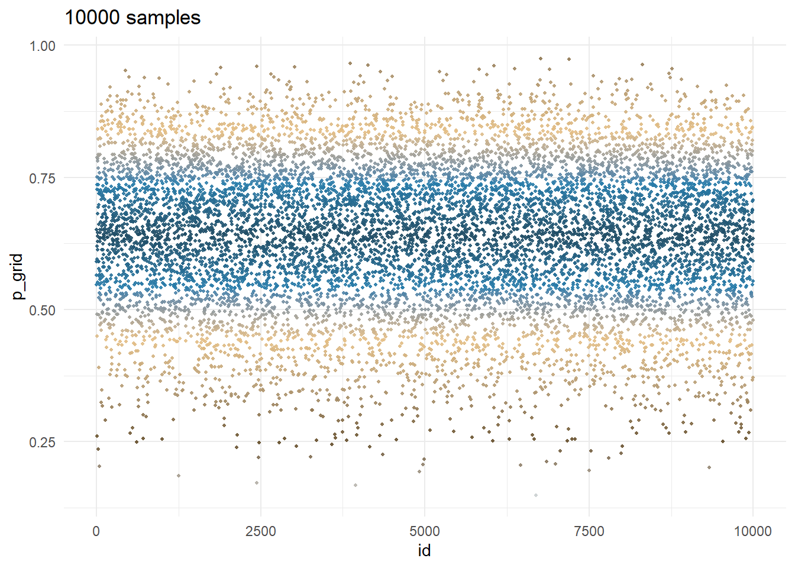
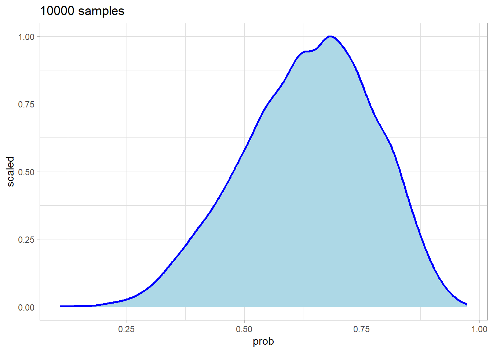
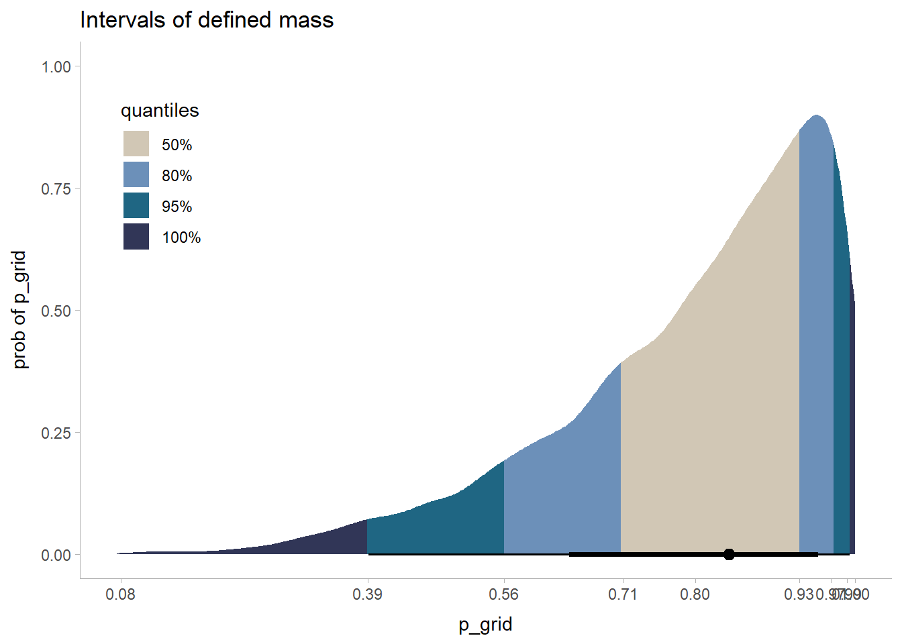

the_grid <- data.frame(
prob = seq(from = 0, to = 1, length.out = 1000),
prior = 1)3 Sampling the Imaginary
3.1 Sampling from grid-approximation posterior
We use the example from chapter 2.
The grid of \(p\) values has a grid size of \(grid\_size\).
The prior is uniformly distributed and so, as discussed in Overthinking box of section 2.3.3, p. 35, \(P(p)=\frac{1}{1-0}=1\).
and we calculate the posterior using the data. We compute the likelihood using the grid of priors from above, then compute the average likelihood which is the sum of the likelihood.
The posterior is defined in detailed in section 2.3.4, p. 37.
\[ \text{Posterior} = \frac{\text{Likelihood} \times \text{Prior}} {\text{Average Likelihood}} \]
Note the code stopifnot(sum(d$posterior) == 1), it is always a good idea to verify this . . . you could be surprised how often you miss the mark.
# the data, see page 28
data <- c("W","L","W","W","W","L","W","L","W")
n_success <- sum(data == "W")
n_trials <- length(data)
# compute the likelihood each value in the grid
the_grid <- the_grid |>
mutate(
likelihood = dbinom(x = n_success, size = n_trials, prob = prob),
posterior = likelihood * prior / sum(likelihood))
assert_that(sum(the_grid$posterior) == 1,
msg = "The total posterior prob. must equal 1.")[1] TRUEwhich gives the estimated posterior probability \(p\) conditional on the data for each point of a grid.
Generate and visualize n_samples samples from the grid with the \(p\) values with their respective posterior probability \(p\) computed above.
Note: We use
dplyr::slice_samplebecausedplyr::sample_nis deprecated.
set.seed(1223)
the_samples <- the_grid |>
slice_sample(n = 1e4, weight_by = posterior, replace = TRUE) |>
# this distance from the mean is used for coloring
mutate(dist = abs(prob - mean(prob)))
the_samples$id <- seq_len(nrow(the_samples))
# str(the_samples)visualize the sample of water proportion
ggplot(data = the_samples, mapping = aes(x = id, y = prob, color = dist)) +
geom_point(size = 0.75, alpha = 0.9) +
scale_color_gradientn(colors = paletteer_d(palette="Manu::Kotare")) +
theme_minimal() +
theme(legend.position = "none") +
labs(title = sprintf("%d samples", nrow(the_samples)))
visualize the density
# show the p density
ggplot(data = the_samples, aes(x = prob)) +
geom_density(aes(y=..scaled..), color = "blue", size = 1, fill = "lightblue") +
theme_light() +
labs(title = sprintf("%d samples", nrow(the_samples)))Warning: Using `size` aesthetic for lines was deprecated in ggplot2 3.4.0.
ℹ Please use `linewidth` instead.Warning: The dot-dot notation (`..scaled..`) was deprecated in ggplot2 3.4.0.
ℹ Please use `after_stat(scaled)` instead.
3.2 Sampling to summarize
3.2.1 Intervals of defined boundaries
the_grid |>
filter(prob < 0.5) |>
summarize(sum = sum(posterior)) sum
1 0.1718746and you can obtain the same result using the sampling data by counting the rows
the_samples |>
filter(prob < 0.5) |>
count() |>
mutate(pct = n / nrow(the_samples)) |>
identity() n pct
1 1744 0.17443.2.2 Intervals of defined mass
Beside the base R quantile function, the mean_qi function from the package ggdist will be used extensively in this project. The benefits of using this package in conjonction with posterior, tidybayes etc. will become obvious in later chapters.
the_samples |>
ggdist::mean_qi(prob, .width = 0.8)# A tibble: 1 × 6
prob .lower .upper .width .point .interval
<dbl> <dbl> <dbl> <dbl> <chr> <chr>
1 0.636 0.444 0.813 0.8 mean qi And if we redo the sampling with observing 3 \(W\) in 3 tosses we have the grid
the_grid <- data.frame(
prob = seq(from = 0, to = 1, length.out = 1000),
prior = 1) |>
mutate(
likelihood = dbinom(x = 3, size = 3, prob = prob),
posterior = likelihood * prior / sum(likelihood))
assert_that(sum(the_grid$posterior) == 1,
msg = "The total posterior prob. must equal 1.")[1] TRUEand we use it to resample
set.seed(1223)
the_samples <- the_grid |>
slice_sample(n = 1e4, weight_by = posterior, replace = TRUE) |>
# this distance from the mean is used for coloring
mutate(dist = abs(prob - mean(prob)))
the_samples$id <- seq_len(nrow(the_samples))the_samples |>
ggdist::mean_qi(prob, .width = 0.5)# A tibble: 1 × 6
prob .lower .upper .width .point .interval
<dbl> <dbl> <dbl> <dbl> <chr> <chr>
1 0.800 0.708 0.931 0.5 mean qi the_samples |>
ggdist::mean_hdi(prob, .width = 0.5)# A tibble: 1 × 6
prob .lower .upper .width .point .interval
<dbl> <dbl> <dbl> <dbl> <chr> <chr>
1 0.800 0.842 1 0.5 mean hdi and we can illustrate the intervals with ggdist as follows
qtl <- c(0.5, 0.8, 0.95, 1)
x_breaks <- ggdist::mean_qi(.data = the_samples$prob,
.width = qtl) |>
select(y, ymin, ymax) |>
pivot_longer(cols = c("y", "ymin", "ymax")) |>
distinct(value) |>
arrange(value) |>
round(digits = 2) |>
pull()
ggplot(the_samples, aes(x=prob)) +
stat_halfeye(aes(fill=stat(cut_cdf_qi(
cdf,
.width = qtl,
labels = scales::percent_format()
)))) +
scale_x_continuous(breaks = x_breaks) +
scale_fill_paletteer_d(palette = "Manu::Takahe", direction = -1,
na.translate = FALSE) +
theme_ggdist() +
theme(legend.position = c(0.1, 0.75)) +
labs(title = "Intervals of defined mass",
x = "p_grid", y = "prob of p_grid",fill = "quantiles")Warning: `stat(cut_cdf_qi(cdf, .width = qtl, labels = scales::percent_format()))` was
deprecated in ggplot2 3.4.0.
ℹ Please use `after_stat(cut_cdf_qi(cdf, .width = qtl, labels =
scales::percent_format()))` instead.Warning: Using the `size` aesthietic with geom_segment was deprecated in ggplot2 3.4.0.
ℹ Please use the `linewidth` aesthetic instead.
3.2.3 Point estimates (loss function)
The linex loss function can be very useful in business analysis. This is to be investigated later.